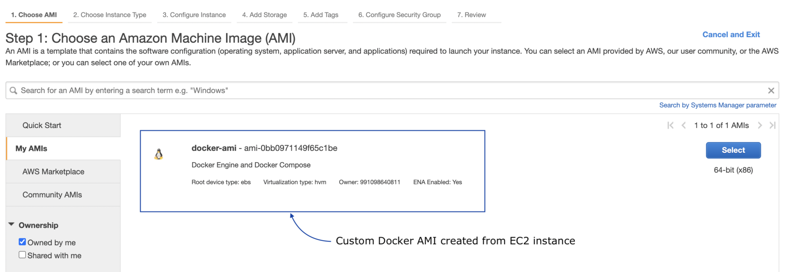

Deploying Django Application on AWS EC2 and Docker
·
Django Rango·
#Django
#AWS
#Docker 3 min read
3 min read
Totoro — With logo colors (AWS, Nginx, Guinicorn, and Django)
If you are here, you are probably looking to deploy a Django project using AWS EC2 and docker without an orchestrator (ECS, EKS, or Docker Swarm – don’t use swarm), you are at the right place.
PS: I’d still recommend using Kubernetes or at least ECS in the longer run!
Let‚Äôs get started ü§™
This post assumes that you are familiar with AWS basic operations, such as spinning up an EC2 instance or other services and attaching a security group with relevant inbound and outbound traffic.
Most resources selected are eligible under the free tier, and I’m not attaching a screenshot of every other screen on the AWS console; instead, just mentioning the steps.
Instead of installing docker-engine in EC2 every time, let’s create a Docker AMI:
- Launch Amazon Linux 2 EC2 instance.
- Set-up docker AMI: Install Docker Engine and Docker Compose; enable and start docker service at AMI boot time.
Launch Amazon Linux 2 EC2 instance:
- Select Region: Typically, a region closest to you.
- Select AMI: Amazon Linux 2 AMI (HVM) – Kernel 5.10, SSD Volume Type (Free tier).
- EC2 Family: t2.micro (Free tier).
- Configure instance: Choose the appropriate VPC and subnet (leave it to default subnet if you aren’t sure) and leave the user-data blank.
- Add your IP address for SSH inbound traffic in the security group and use a wild card 0.0.0.0 (not recommended).
- Download the RSA keypair .pem file.
Set-up docker AMI:
- Login into remote EC2 instance using the ssh:
ssh -i <ec2-keypair>.pem ec2-user@<ec2-public-ip-address>(don’t forget to set the right permission to the .pem file:chmod 0400 <ec2-keypair>.pem) - Install docker engine and docker-compose.
sudo yum update
sudo yum install docker
wget https://github.com/docker/compose/releases/latest/download/docker-compose-$(uname -s)-$(uname -m)
sudo mv docker-compose-$(uname -s)-$(uname -m) /usr/local/bin/docker-compose
sudo chmod -v +x /usr/local/bin/docker-compose
sudo systemctl enable docker.service
sudo systemctl start docker.service
sudo chmod 666 /var/run/docker.sock
Note: To run docker-compose without sudo: sudo usermod -aG docker $USER
Run the Django application on Docker + EC2:
- Launch an EC2 instance with docker pre-installed.
- Configure user data; to include environment variables and start-up script.
Figure 1: Create AMI from EC2 instance
Launch an EC2 instance with docker pre-installed:
- üëª We are almost done! On the EC2 dashboard, select the EC2 instance, go to ‚Äúactions > image and templates > create image‚Äù and give the AMI a name.
- Terminate and launch another EC2 instance (to test) from the new AMI (choose custom AMI while launching EC2 instance).
- In the configure section, the user-data area is as follows (using cloud-init):
Content-Type: multipart/mixed; boundary="//"
MIME-Version: 1.0
--//
Content-Type: text/cloud-config; charset="us-ascii"
MIME-Version: 1.0
Content-Transfer-Encoding: 7bit
Content-Disposition: attachment; filename="cloud-config.txt"
#cloud-config
runcmd:
- echo "For the first boot"
cloud_final_modules:
- [scripts-user, always]
--//
Content-Type: text/x-shellscript; charset="us-ascii"
MIME-Version: 1.0
Content-Transfer-Encoding: 7bit
Content-Disposition: attachment; filename="userdata.txt"
#!/bin/sh
sudo chmod 666 /var/run/docker.sock
echo 'export DEBUG=False DATABASE_NAME=licensing DATABASE_USER=admin DATABASE_PASSWORD=xxxx HOST_ENDPOINT=rds-licensing.xxxx.ca-central-1.rds.amazonaws.com REDIS_LOCATION=redis://127.0.0.1:6379/' > ~/script.sh
chmod +x ~/script.sh
sudo cp ~/script.sh /etc/profile.d/script.sh
source /etc/profile
--//--
Note: The user data script shown above works on first-boot and re-boots/restarts.

Figure 2: Launch EC2 instance from Custom Docker AMI
Note: A better practice is to save the user data in a file, convert it to base64.
Figure 3: Set user data for EC2 instance (Docker AMI)
Last but not the least, in the user-data, include how’d want to get your docker-compose.yml file. If it’s git, include a git clone <repo>.git and docker-compose up
Figure 4: EC2 Security Group
The EC2 security group is configured to receive public traffic; typically, HTTP traffic would only be from the load balancer.
If you are following up with my prior post on dockerizing the Django application with MySQL database and Redis cache, here’s a quick set of steps to create RDS – MySQL.
Create MySQL Database:
- Choose a database creation method: Standard Create.
- Engine options: MySQL
- Edition: MySQL Community
- Version: MySQL 8.0.27
- Templates: Free Tier
- Settings: Fill in the database name, master username, and master password.
- DB instance class: db.t2.micro (Free tier)
- Storage: General Purpose SSD with 20 GB (20 GB is the minimum storage for RDS).
- Database authentication: Password authentication (Although not ideal, since the database is only accessible within the private network).
If the database set-up is not for production use, make sure to use free tier, disable auto-scaling, backups, enhanced monitoring, and multi-AZ, and don’t set the RDS to “public”; use it within the private network. Instead, attach the EC2 security group to RDS inbound rules at port 3306.
Figure 5: RDS Set-up in the private network
And yes üóÑ make sure RDS and EC2 are within the same VPC.
You are good to go üöÄ
Don’t forget to update the hostnames and passwords in user data (env variables) and configure the security group EC2 instances.

Cite this article as: Adesh Nalpet Adimurthy. (Feb 17, 2022). Deploying Django Application on AWS EC2 and Docker. PyBlog. https://www.pyblog.xyz/django-on-ec2-docker
 #index
#index